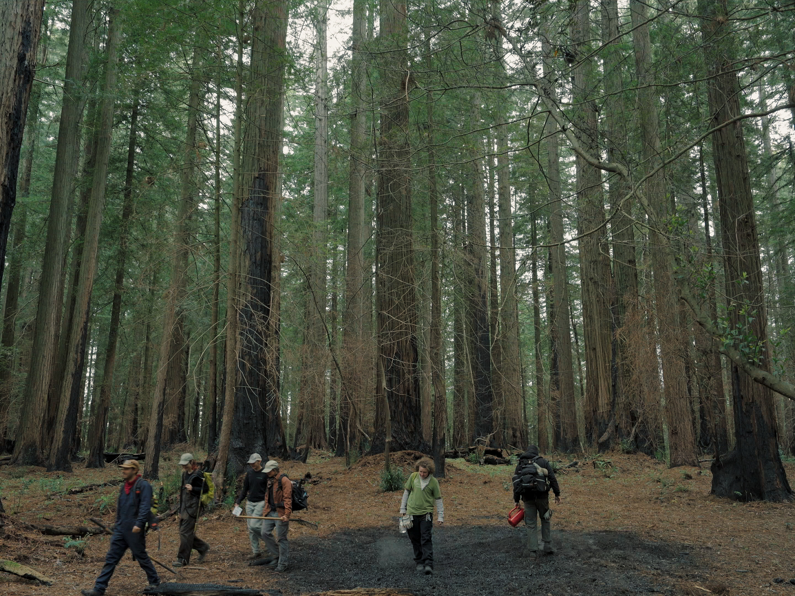
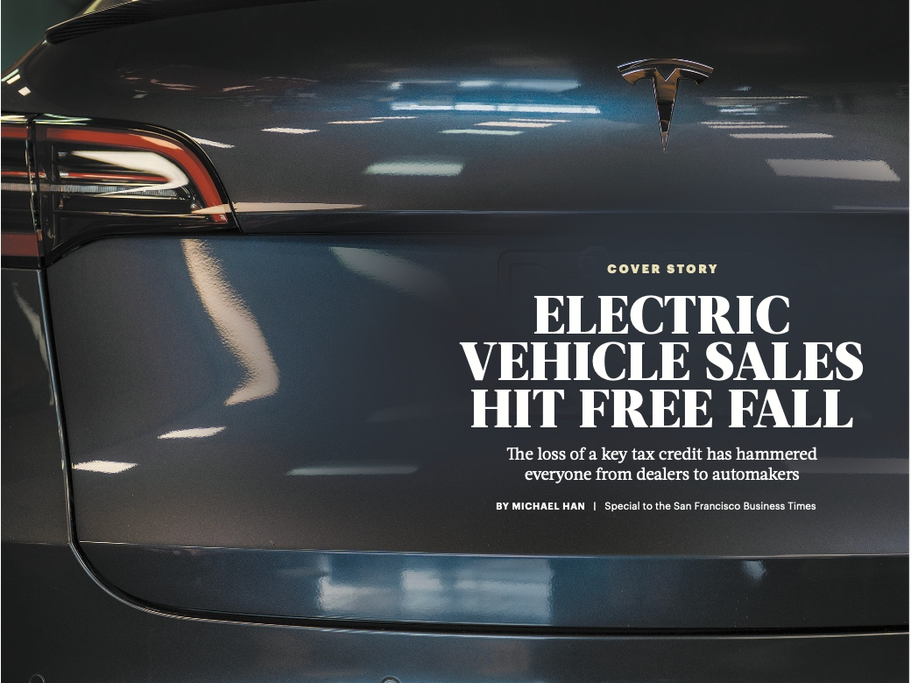
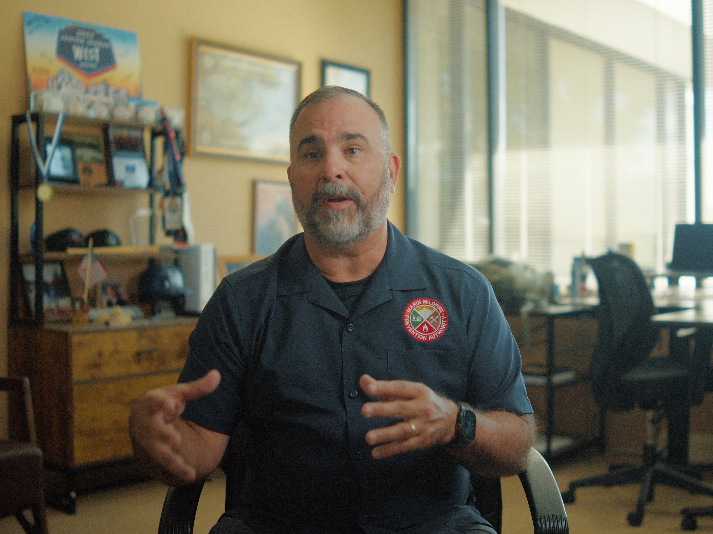
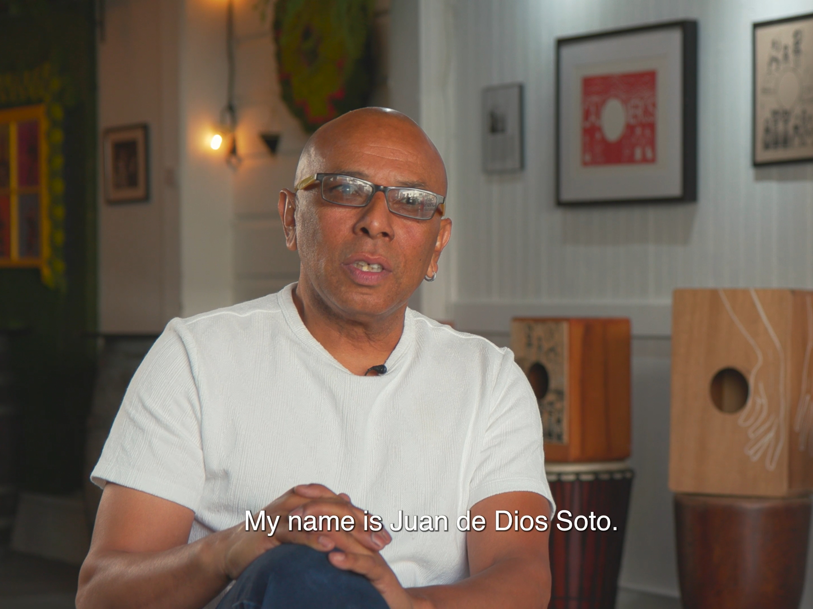
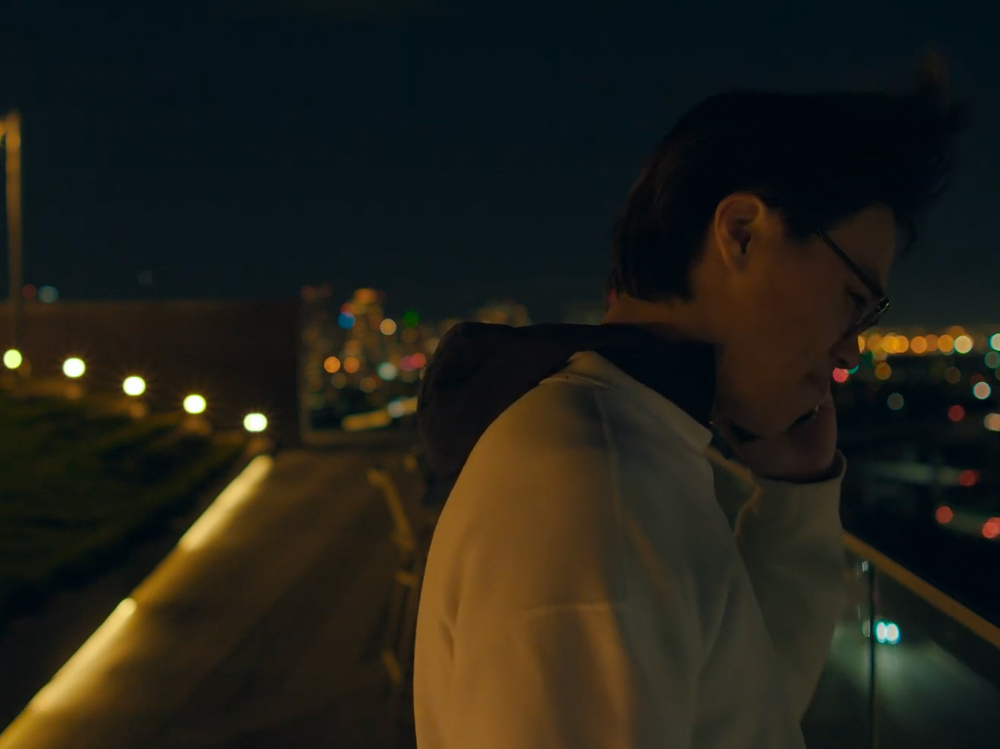
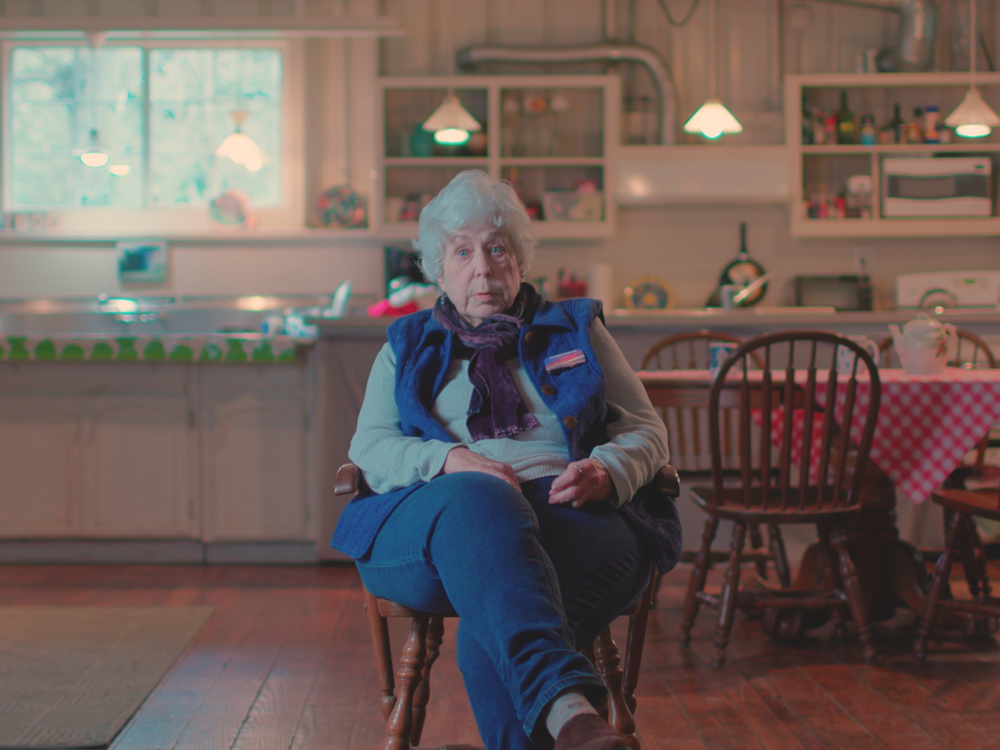

Michael Han ·Business Journalist · Video Specialist
Complex problems.
Clearly Told.
I report on the forces shaping our lives and make films about the people moving through them.
Based in the Bay Area · Available for select projects

Now showing
Burning
Together
01 / Reporting
Journalism

The Electric Slide
How the canceled subsidy led to slumping sales at Bay Area dealerships, impacting consumers who desired an EV and are now considering gas-powered cars.
02 / Images in motion
Visual Work
03 / The moving image
Films

01Burning Together
Following people who use prescribed fire to protect communities from larger wildfires. PW: jschool

02My Little Peru
Peruvian artist Juan Soto pursuing his passion for art in San Francisco's Mission District.

03Echoes Across Oceans
A Chinese international student navigates passion, identity, and familial expectations.

04The Little Town That Did
A group of women work to preserve the archives and memory of Jenner, California.
04 / Contact